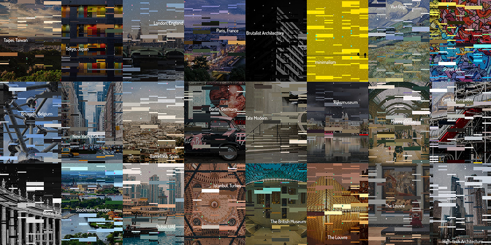

Introduction
I have been exploring how creative coding can contribute to the graphic design process and open up more possibilities in creativity and aesthetics. I created a Poster Generator using p5.js. Users can input keywords, and the programme will import relevant photos through the Pixabay API and automatically generate a visual design poster.
Concept and Background Research
The idea for this project came from exploring the potential of creative coding in graphic design. My initial exposure to this idea came from a classic design case, Pentagram's generative branding identity system for MIT Media Lab. Cotton, a design company established this year, also provided great inspiration, as they combine design with creative coding. The initial idea was to learn how to handle typography with coding, create generative and adaptive layouts, and distinguish between headings and body text through the process of making this project. I wanted to extract colours from a photo and automatically generate an application-specific graphic, based on the concept of a pattern. I expected that no matter how the photo changes, the series of generated works would still have a sense of continuity. Since the theme of this project required interactive works, I decided to try incorporating an image API as the image source. Initially, I imagined randomly importing images of classic artwork, along with corresponding text: the title of the work, the year, the author's name, etc. I envisioned this as being suitable for a museum's branding identity system in the field of graphic design. After researching APIs, I discovered that the Pixabay API allowed users to search for images, bringing even more possibilities to the project.
Technical Implementation
I started by creating auto-generated rects based on the colors in the photo. I tried to incorporate the concept of grids from the field of graphic design, hoping to give it a Swiss International Style design while maintaining a sense of grid order, no matter how randomly it was generated. To add visual layers, I arranged four different rect sizes, including block and dot shapes, resulting in a digital-style output. Interestingly, in the drawRectC() function for drawing small squares, I deliberately misplaced the RGB fill values, adding complementary color highlights to the poster's details. The drawMicrotext() function, which automatically draws the search keyword in small letters, took a considerable amount of time to implement, as I wanted the english letters to be randomly scattered but still maintain their reading order. I referred to the grid calculation method in zilog's animated event poster (d-squared) and the Google Fonts setting method. Dae In Chung's Chillin' work inspired the way I allowed users to input custom messages and download images interactively. lukecahalin's interactive, moving poster idea inspired me to use mouse interaction with the poster, but I couldn't implement it within the given time. The API functionality and button parts of the code were generated by ChatGPT, which I further modified.
Reflection and Future Development
This was a fascinating experience. I had a prototype in mind, and in the past, I could quickly create it using Adobe Illustrator. However, using p5.js, just setting up the english text to follow the reading order took a lot of time to figure out the logic. However, once I spent time setting up the system, it allowed me to generate a large number of results instantly. There are many areas to explore in the future, and I would also like to try the mask() function to draw new layers for richer visual depth. The current interface is very basic, and I would like to try to make it truly operational online and optimize its interface in the future.